Fabriquer le TS-Bug et son parcours
Gamme de fabrication
1-Module Electrique
Phase 10
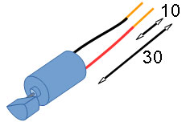
- Couper le fil noir du moteur à 30mm = 3cm
(conservez le bout coupé pour plus tard)
- Dénuder le fil noir sur 10mm
- Couper le fil rouge du moteur à 30mm
(conservez le bout coupé pour plus tard)
- Dénuder le fil rouge sur 10mmPhase 20
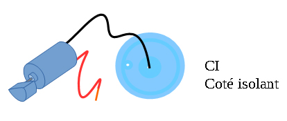
- Faites passer le fil noir du moteur dans le perçage au centre du CI coté isolant.
- la partie dénudée du fil sortira du CI coté pistes conductrices
Phase 30
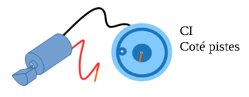
Brasage à l'étain
Brasez le fil noirPhase 40
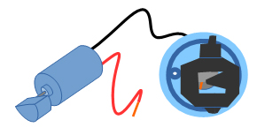
Brasage à l'étain :
Brasez les deux pattes du support de pile sur la piste extérieure du CI
Attention au sens du signe V !
Attention à ne pas boucher le perçage !Phase 50
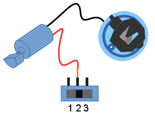
Brasage à l'étain
Brasez le fil rouge sur l’interrupteur : patte du milieuPhase 60
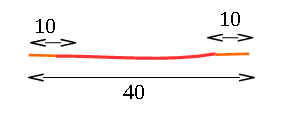
Coupez et dénudez un fil rouge
Phase 70
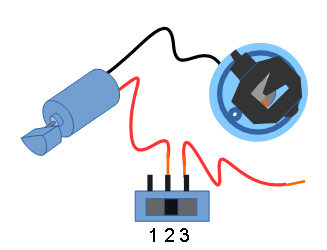
Brasage à l'étain
Brasez le dernier fil sur l’interrupteur : patte de droite
Phase 80
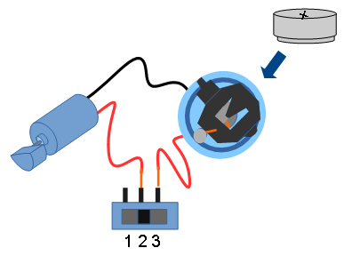
Brasage à l'étain
Passez le dernier fil dans le perçage puisbrasez-le sur la piste extérieure du CI
Phase 90
Insérez la pile
Testez le fonctionnement avec l'interrupteur,
Gamme de fabrication
2-Châssis
Phase 10
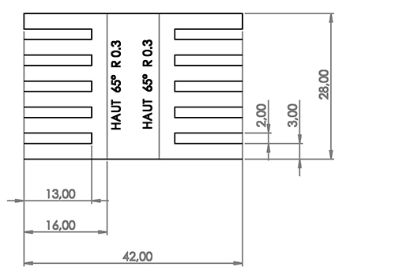
Tracer sur la feuille de PolyPropylène : réglet + crayon
Découper le chassis : paire de ciseaux
Phase 20
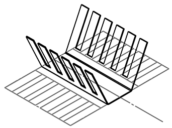
Marquer le plis
Plier à 65° le côté droit
Marquer le plis
Plier à 65° le côté gauchePhase 30
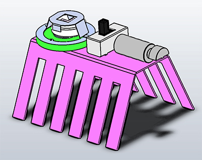
Fixer le module électrique avec la patafix
Télécharger le fichier
Télécharger le fichier
Télécharger le fichier
Assemblage-1.zip Assemblage.easm